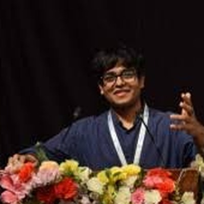

Dhruv Gada
PhD student, Biomedical Engineering · Brown University
I'm a PhD student in Biomedical Engineering at Brown University, advised by Dr. Anubhav Tripathi. My research is on AI-driven biomedicine: agentic AI for biomedical settings, AI-powered software for biomedical devices, language models for DNA and RNA, and making those models explainable and causally grounded.
Before this I built ML and LLM pipelines for biomedical data in the Tripathi Lab. Earlier, in Mumbai, research on NLP, forecasting and medical imaging became most of the papers below.

DGResearch
AI for biomedicine that can act, explain itself, and be trusted.
Agentic AI in biomedical settings
AI agents that plan and carry out parts of biomedical work, from data analysis to experimental workflows, while keeping researchers and clinicians in control.
AI-powered software for biomedical devices
Building and analyzing the software behind biomedical devices, using AI to automate data acquisition, quality control and analysis. In the Tripathi Lab this cut manual processing time by 40%.
Language models for DNA and RNA
Applying language models to genomic and transcriptomic sequences, treating DNA and RNA as languages a model can learn to read.
Explainability and causality
Understanding why biomedical models, and LLMs especially, reach their conclusions, and whether their reasoning reflects causal structure rather than correlation.
Spatial graph neural networks for immunotherapy response in TNBC
Triple-negative breast cancer responds unevenly to immunotherapy, and much of that variation lives in how cells are arranged. I modeled the tumor microenvironment from high-plex imaging as spatially aware graphs, combining cell interactions and spatial features to predict response in a way that stays biologically interpretable.
- Agentic AI
- Biomedical AI
- Biomedical devices
- Genomic language models
- Explainable AI
- Causal inference
- LLMs
- Graph neural networks
- Medical imaging
Publications
Grouped by area, newest first. My name is in bold.
Biomedical and health AI
-
2026
Decoding Plasmodium knowlesi Stages with Explainable AI and ML/DL ModelsUnder review Using ML/DL and explainable AI to detect and interpret malaria parasite stages.
-
2024
MobileNet-Based Transfer Learning: A Novel Approach for Improved Alzheimer's Disease Classification from Brain Imaging D. Panchal, N. Kothari, D. Gada, P. Kanani, L. Kurup, D. Sankhe, G. Pandya International Journal of Intelligent Systems and Applications in Engineering, 12(3), 2777–2783
-
2024
SwasthyaBuddy: A Comprehensive System for Assessing Chronic Obstructive Pulmonary Disorder Patients V. Vora, M. Shah, G. Shah, D. Gada, K. Bhowmick Journal of Computational Analysis and Applications, 33(4), 470–490
Security, NLP and social computing
-
2025
Comprehensive Analysis of Machine Learning and Deep Learning Models on Prompt Injection Classification using Natural Language Processing Techniques B. Jain, P. Pawar, D. Gada, T. Patwa, P. Kanani, D. Patil, L. Kurup International Research Journal of Multidisciplinary Technovation, 7(2), 24–37
-
2024
Indian Phishing Landscape: A Machine Learning and Deep Learning Approach for Detecting Malicious URLs and Curating an Indigenous Dataset D. Gada, C. Kale, H. Goswami, S. Iyer International Journal of Intelligent Systems and Applications in Engineering, 12(4), 1670–1679
-
2024
Evaluating the Influence of Text Representation Techniques on Diverse Machine Learning Algorithms for Stress Detection in Social Media Users K. Deulkar, M. Narvekar, P. Gandhi, D. Gada, S. Kamath IEEE conference proceedings, 2024
-
2023
DR-SASV: A Deep and Reliable Spoof Aware Speech Verification System A. Gada, N. Kothari, R. Karani, C. Badane, D. Gada, T. Patwa International Journal on Information Technologies & Security, 15(4), 105–116
-
2022
Offense Detection Using BERT and CNN M. Mehta, D. Gada, R. Sharma, K. Chavan, P. Kanani IEEE 3rd Global Conference for Advancement in Technology (GCAT), 1–5
Forecasting and uncertainty
-
2024
Enhancing Time Series Forecasting and Uncertainty Estimation with Bayesian Neural Networks T. Patwa, D. Gada, Y. Ranawat, S. Kamath, V. Nair, K. Bhowmick Journal of Computational Analysis and Applications, 33(4), 445–456
-
2023
Stock Prediction using GAN and Sentiment Analysis S. Shah, P. Patel, R. Bihani, D. Gada, K. Ghag International Journal on Recent and Innovation Trends in Computing and Communication, 11(9), 2307–2316
Applied ML systems
-
2025
A Semisupervised Learning Approach for Code Smell Detection I. Kheria, D. Gada, R. Karani SN Computer Science, 6, 143
-
2024
Smartphone-Based Pothole and Speed-Breaker Detection System N. Kothari, D. Gada, T. Patwa, Y. Ranawat, K. Bhowmick Human-Centric Smart Computing, Springer, 401–416
Patent
- Prompt Development and Education System with Anubhav Tripathi Filed Aug 2025 US provisional patent application 63/871,072. An AI-driven system for prompt engineering, automated educational content generation and assessment.
Experience
Research, education and teaching.
Research
-
Apr 2025 – present
Graduate Research Assistant, AI Engineer
Tripathi Lab, Brown University, advised by Dr. Anubhav TripathiAutomated analysis pipelines and ML/LLM platforms for multi-modal biomedical data, GPU-optimized deep learning models, and standardized automation for lab assays across imaging modalities.
-
Jan – Apr 2025
Research Assistant, AI-Driven Survey Systems
Watson Institute, Brown UniversityFull-stack survey platforms, transformer-based image generation for experimental stimuli, and agent-based web scraping for data collection.
-
May – Aug 2023
Junior Research Assistant, Deep Learning for Pattern Recognition
ilaiLabs and Research, Inc. (remote)Anomaly detection in clinical datasets, SHAP-based interpretability for healthcare models, and GAN-generated data to correct class imbalance in medical imaging.
-
2021 – 2024
Research Assistant, Statistical ML and NLP
D. J. Sanghvi College of Engineering, with Dr. Kiran Bhowmick and Dr. Pratik KananiBayesian neural networks for time-series uncertainty, transformer models for offense detection, LLMs for prompt-injection classification, and sensor-based ML for road-hazard detection.
Education
- PhD in Biomedical Engineering, Brown University 2026 – present Advised by Dr. Anubhav Tripathi.
- MS in Computer Science, Brown University 2024 – 2026 GPA 4.00. Self-supervised learning, AI and security, critical data and ML studies, inclusive AI.
- BTech in Computer Engineering, Honors in Intelligent Computing, University of Mumbai 2020 – 2024 SGPA 9.25/10.
- Programming and Data Science Certificate, IIT Madras (online) 2020 – 2024
Teaching
- Fairness in Automated Machine Learning, Brown UniversitySpring 2026
- Blockchains and Cryptocurrencies, Brown UniversityFall 2025
- Computer Vision, D. J. Sanghvi College of Engineering2023Wrote open-source lab manuals covering YOLO, GANs and transfer learning.
Projects
Course research and things I've built.
Language models as reward functions for RL
A framework where LLMs generate reward signals for Q-learning agents, tested in Blackjack and Frozen Lake across several memory modes.
Image representations that resist data bias
Self-supervised augmentation with ResNet-50 and custom losses to reduce reliance on spurious correlations in biased datasets.
Ordering pretext tasks in self-supervised learning
Showed that a curriculum over compatible pretext tasks improves downstream classification.
NexHire
An AI interview-prep platform combining facial-expression tracking, speech-to-text and BERT-based tone analysis, with LLM feedback on coding problems.
DocVault
Decentralized, tamper-proof document storage on a blockchain, with MetaMask login.
CommuneFarm
GPS-enabled ML for crop yield and soil prediction, plus a portal that tracks government subsidies and policies for farmers.
Outside the lab
Before grad school I co-founded Crucibo, a startup where I led the backend and operations and shipped a mobile app to the Play Store and App Store. It taught me how far a research idea is from a product people use, and I still enjoy closing that gap.
I spent two years as a core mentor at Unicode, my college's open-source club, guided teams at more than ten hackathons, and gave a guest talk on generative AI and ML. Helping someone get their first project working is one of my favorite parts of this field.
Contact
I'm always happy to talk about agentic AI for biomedicine, language models for DNA and RNA, explainability, or possible collaborations. The best way to reach me is dhruv_gada@brown.edu.